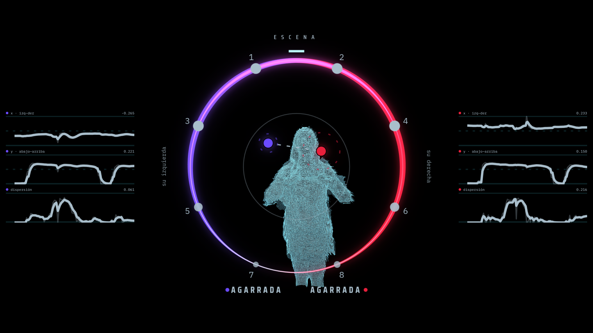
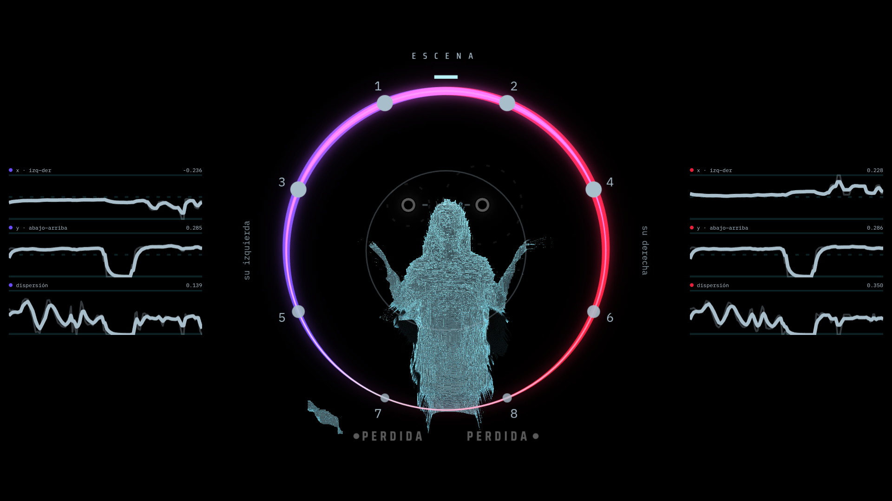
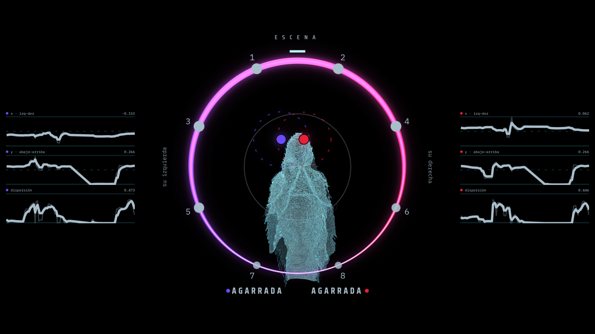
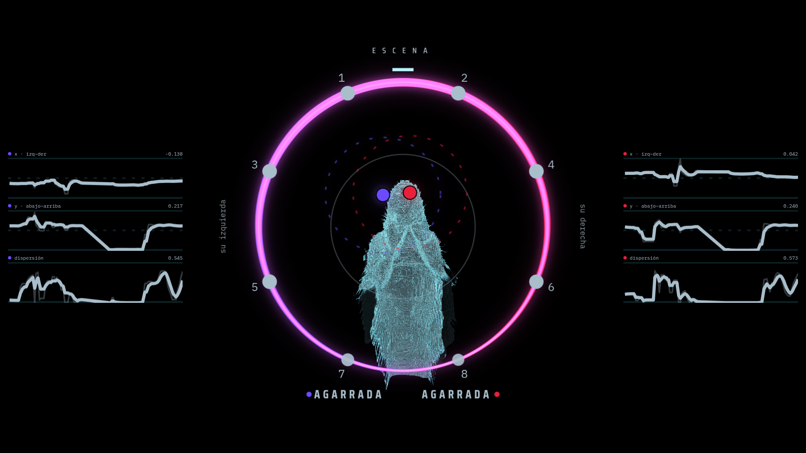
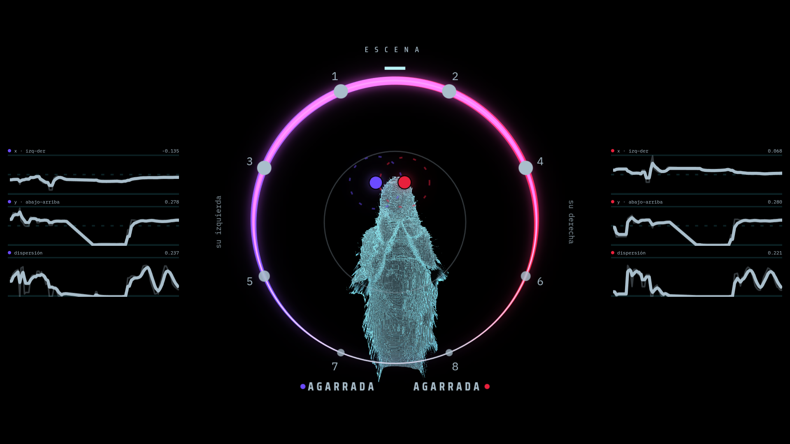
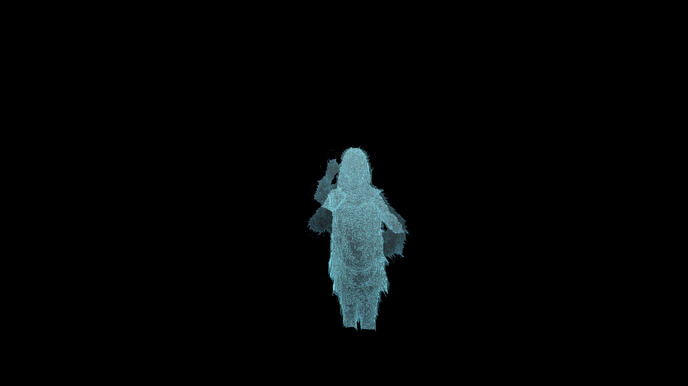
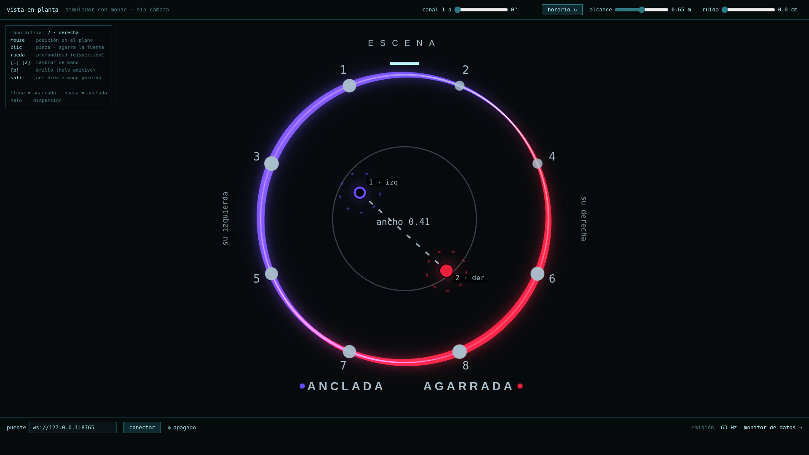
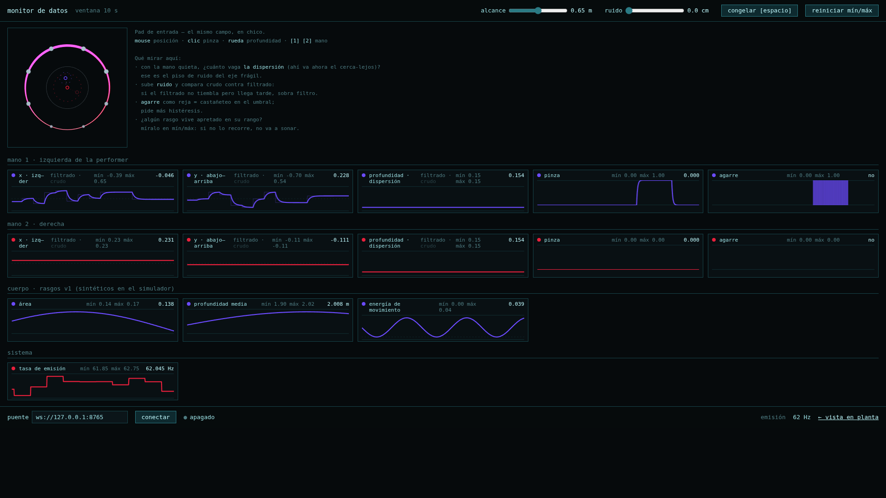
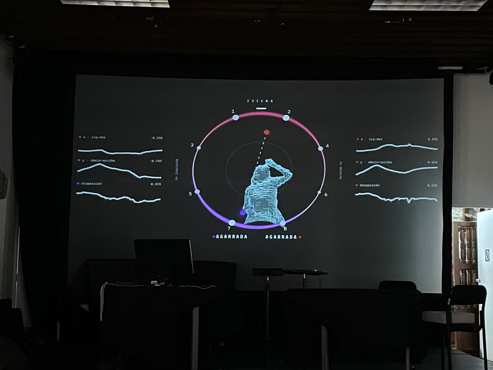
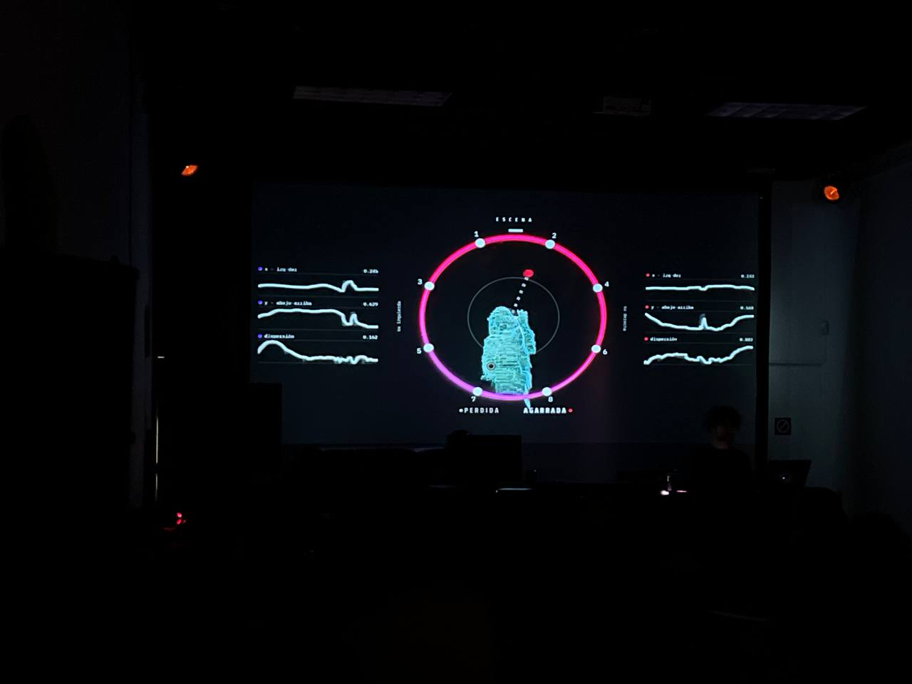

La obraThe work
Decoding Gesture es un performance audiovisual octofónico con código al vuelo, en el que el cuerpo de la intérprete —seguido gestual y facialmente con una cámara de profundidad— controla la síntesis neuronal de una voz asémica que se granula y se distribuye en el espacio sonoro.
El gesto como umbral entre cuerpo y voz sintética, donde el género se codifica, decodifica y queeriza en tiempo real.
Dura ocho minutos, y ese arco fijo es lo que organiza la pieza: no hay estructura generativa abierta. Hay una partitura que se escribe en vivo sobre una duración conocida.
Decoding Gesture is an octophonic audiovisual performance with live coding, in which the performer's body —tracked in gesture and face by a depth camera— drives the neural synthesis of an asemic voice that is granulated and distributed through sonic space.
Gesture as a threshold between body and synthetic voice, where gender encodes, decodes and queers itself in real time.
It lasts eight minutes, and that fixed arc is what organises the piece: there is no open generative structure. There is a score written live over a known duration.
Qué se veWhat you see
El público no ve a la intérprete. Ve su cuerpo capturado en profundidad, en una malla de cromo, dentro de un anillo dibujado. El anillo es el de la sala: las ocho bocinas entre las que el público está sentado, vistas desde arriba.
Alrededor del cuerpo, una cinta de grosor variable dice cuánto suena cada bocina. Dos marcas son las manos —violeta su izquierda, rojo su derecha— y donde las dos coinciden sobre una misma bocina, el color se suma a magenta.
Cierra la mano y el sonido se queda ahí.
Ésa es la regla, y se aprende mirándola. La posición sólo se actualiza mientras los dedos hacen pinza; al soltar, la fuente queda anclada donde estaba y sigue sonando sin la mano. La intérprete decide cuándo el sistema responde.
The audience does not see the performer. It sees her body captured in depth, as a chrome mesh, inside a drawn ring. The ring is the room's: the eight loudspeakers the audience is sitting among, seen from above.
Around the body, a ribbon of varying thickness shows how much each speaker is sounding. Two marks are the hands —violet for her left, red for her right— and where both land on the same speaker, the colours add up to magenta.
Close your hand and the sound stays there.
That is the rule, and it is learned by watching. Position only updates while the fingers pinch; on release, the source stays anchored where it was and keeps sounding without the hand. The performer decides when the system responds.
Qué se oyeWhat you hear
Una voz sin palabras, generada por una red neuronal que corre dentro de SuperCollider, granulada y repartida entre ocho canales. La mano no gira una perilla, se mueve dentro del espacio latente del modelo.
Debajo hay un dron que sostiene el registro grave y una capa de granulación que se reescribe en vivo. Una tercera capa sólo suena cuando el cuerpo la produce, y es ahí donde el gesto se percibe como causa de la voz.
A voice without words, generated by a neural network running inside SuperCollider, granulated and spread across eight channels. The hand does not turn a knob, it moves inside the model's latent space.
Beneath it, a drone holds the low register and a granulation layer is rewritten live. A third layer sounds only when the body produces it, and that is where gesture is perceived as the cause of the voice.
El cuerpo no es el espectáculoThe body is not the spectacle
Hay un linaje reciente de trabajo audiovisual donde el cuerpo capturado en tres dimensiones es el material visual en tiempo real. Aquí el cuerpo es el instrumento de una voz sintética.
Por eso la interfaz de control está proyectada, y no escondida en la laptop. La pantalla tiene que servir a dos lectores a la vez y con necesidades opuestas: la intérprete, que la lee de reojo a tres metros mientras toca, y la sala, que la ve a doce. A esa distancia lo que se lee son áreas y grosores, no texto.
There is a recent lineage of audiovisual work in which the body captured in three dimensions is the real-time visual material. Here the body is the instrument of a synthetic voice.
That is why the control interface is projected rather than hidden on the laptop. The screen has to serve two readers at once, with opposing needs: the performer, glancing at it from three metres while playing, and the room, watching from twelve. At that distance what reads are areas and thicknesses, not text.
EstrenoPremiere
- FechaDate Viernes 14 de agosto de 2026 Friday 14 August 2026
- SedeVenue Auditorio del CMMAS, Morelia, México
- FormatoFormat 8 canales · 8 minutos 8 channels · 8 minutes
La interfazThe interface
Las fotografías del estreno se tomaron en la sala, con el grano del proyector encima. Estas imágenes salen del mismo sistema corriendo contra el corpus de pruebas grabado el 6 de agosto, a 1920×1080 y sin nadie en el auditorio. No son registro de la función: son la misma interfaz, legible.
The premiere photographs were taken in the room, with the projector's grain on top. These images come from the same system running against the test corpus recorded on 6 August, at 1920×1080 and with nobody in the auditorium. They are not documentation of the performance: they are the same interface, legible.








RegistroDocumentation


CréditosCredits
- Composición sonoraSound Marianne Teixido
- Composición visualVisuals Emilio Ocelotl · Marianne Teixido
Marianne Teixido
Composición sonora Sound compositionCompositore, live coder e investigadora radicada en la Ciudad de México, cuya práctica articula tecnología, transfeminismo y experimentación sonora con redes neuronales. Ha presentado su trabajo en NIME, MUTEK MX, CTM-Transmediale en Berlín y en la Linux Audio Conference en Stanford. Recibió el Best Music Award en NIME 2023 y en 2024 fue artista residente en CCRMA, Stanford University. teixido.cc
Composer, live coder and researcher based in Mexico City, whose practice brings together technology, transfeminism and sonic experimentation with neural networks. She has presented her work at NIME, MUTEK MX, CTM-Transmediale in Berlin and the Linux Audio Conference at Stanford. She received the Best Music Award at NIME 2023 and in 2024 was artist in residence at CCRMA, Stanford University. teixido.cc
Emilio Ocelotl
Composición visual · captura e interfaz Visual composition · capture and interfaceArtista e investigador interdisciplinario con formación en sociología (UNAM) y tecnología musical (maestría y doctorado, UNAM). Su trabajo explora sistemas interactivos, live coding y narrativa sonora. Cofundador de los colectivos RGGTRN y PiranhaLab, ha presentado su obra en ISEA, NIME y el Cervantino. En 2024 realizó una residencia en CCRMA, Stanford, con Marianne Teixido. Docente en CENTRO y Tec de Monterrey. ocelotl.cc
Interdisciplinary artist and researcher trained in sociology (UNAM) and music technology (MA and PhD, UNAM). His work explores interactive systems, live coding and sonic narrative. Co-founder of the RGGTRN and PiranhaLab collectives, he has presented work at ISEA, NIME and the Cervantino festival. In 2024 he was in residence at CCRMA, Stanford, with Marianne Teixido. He teaches at CENTRO and Tec de Monterrey. ocelotl.cc